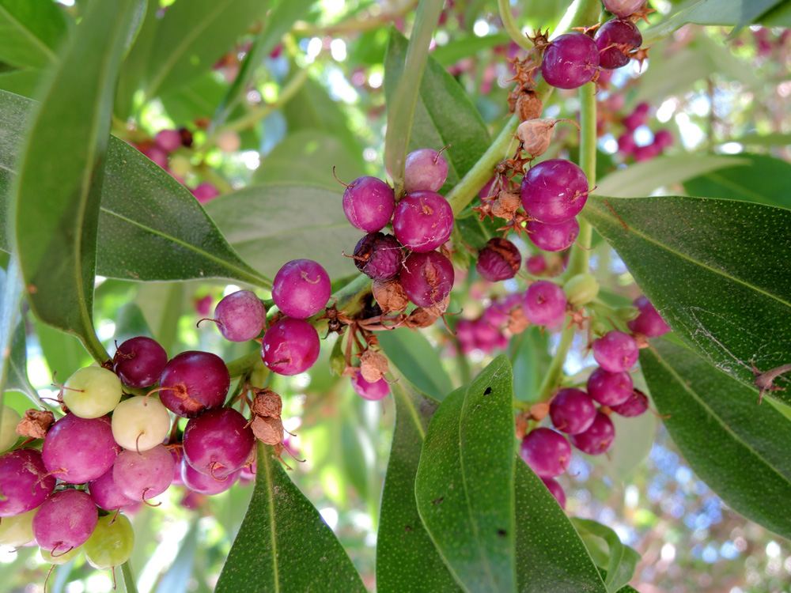

Siempreverde (Myoporum laetum)

- Familia: Scrophulariaceae (familia de las escrofulariáceas).
- Tronco: es recto y leñoso, con un diámetro que puede alcanzar hasta 50 cm en árboles maduros. Es de textura suave y color marrón claro en los ejemplares jóvenes, volviéndose más rugoso y grisáceo con la edad.
- Corteza: es de color gris claro y presenta una textura lisa en árboles jóvenes, desarrollando fisuras superficiales y una textura más áspera a medida que el árbol envejece.
- Copa: es densa y redondeada, con ramas que crecen en una disposición abierta y ligeramente arqueada. La copa puede alcanzar alturas de entre 5 y 10 metros, proporcionando una sombra moderada.
- Hoja: son simples, alternas, de forma lanceolada a elíptica, y de color verde brillante. Son perennes, lo que significa que permanecen en el árbol durante todo el año. Las hojas miden entre 7 y 15 cm de largo y son suaves al tacto, con bordes enteros o ligeramente ondulados.
- Flor: son pequeñas, tubulares y de color blanco a rosa pálido, a menudo con manchas púrpuras en la garganta. Se agrupan en racimos axilares y florecen durante la primavera y el verano. Aunque pequeñas, las flores son atractivas y añaden un toque ornamental al árbol.
- Fruto: es una drupa pequeña y redondeada de color púrpura a negro cuando madura. Cada fruto contiene una sola semilla y es consumido por diversas aves, que ayudan en la dispersión de las semillas.
- Usos: El siempreverde se cultiva principalmente por su valor ornamental, utilizado en jardines, parques y como seto. Es resistente a condiciones costeras y se utiliza en áreas cercanas al mar debido a su tolerancia a la salinidad. También se planta para estabilizar suelos y controlar la erosión. La madera del siempreverde es ligera y no se utiliza comúnmente en la industria.
- Floración: ocurre en primavera y verano, con la producción de racimos de pequeñas flores tubulares. Las flores son discretas pero agregan un valor ornamental significativo.
- Fructificacion: sigue a la floración, con la formación de drupas que maduran en otoño. Los frutos son consumidos por aves, lo que facilita la dispersión de las semillas.
- Reproducción: se reproduce tanto por semillas como por esquejes. Las semillas se cosechan de los frutos maduros y se siembran en condiciones adecuadas para germinar. La reproducción por esquejes también es común y efectiva, permitiendo la propagación vegetativa del árbol.

Hoja

Fruto
Flor